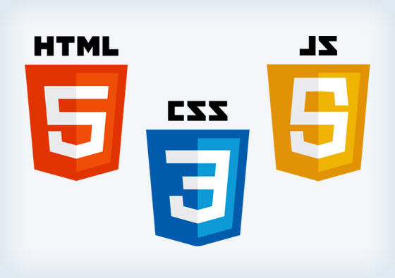

CSS
CSS (/siːɛsɛs/ англ. Cascading Style Sheets — каскадные таблицы стилей) —
формальный язык описания внешнего вида документа, написанного с использованием языка разметки.
Преимущественно используется как средство описания, оформления внешнего вида веб-страниц,
написанных с помощью языков разметки HTML и XHTML, но может также применяться к любым XML-документам.
JS
JavaScript — мультипарадигменный язык программирования.
Поддерживает объектно-ориентированный, императивный и функциональный стили.
Является реализацией языка ECMAScript (стандарт ECMA-262).
JavaScript обычно используется как встраиваемый язык для программного доступа к объектам приложений.
Наиболее широкое применение находит в браузерах как язык сценариев для придания интерактивности веб-страницам.
Front-end

© Васько Алиса Александровна